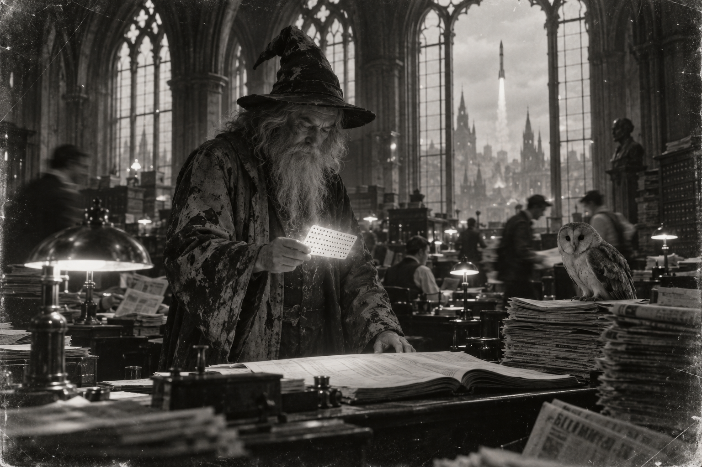

Morning Edition
6:00 AM CDTFinance & Markets
Twenty-Nine Thousand
Yahoo's Friday close, this desk: the Dow at 51,176.96, the S&P 500 at 7,722.72, the Nasdaq at 27,190.86. Against Thursday, that is about 0.5%, 0.7%, and 1.2% higher — 250 points, 56 points, 319 points. The Bureau of Labor Statistics, embargoed until 8:30 a.m. ET Friday: nonfarm payrolls up 29,000. Unemployment 4.2%. Average hourly earnings up 5 cents, to $37.81, 3.0% over the year. July was revised from a gain of 21,000 to a loss of 10,000. August was revised from 162,000 to 133,000. The two months together are 60,000 lower than last printed. The 10-year finished at 5.277%, up from 5.237%. The 30-year closed at 5.630%. A soft print is not a pivot. Read the revision beside the close. Then do not trade the headline you already missed.
Source: BLS Employment Situation and Yahoo Finance, October 2, 2026One Hundred Million
Same desk, Friday settlement: Brent $102.25, a nickel under Thursday's $102.31. WTI $91.11, down from $92.87. Gold $4,162.30, down from $4,202.30. The dollar index 101.93, off Thursday's 102.10. BBC, overnight: the G7 said it will release up to 100 million barrels of oil and diesel over four months, coordinated by the IEA, including a substantial diesel release within 20 days. No export restrictions between members. Macron chaired. Trump said on Friday that Europe had agreed and the process would begin immediately, then said an export ban was "never really on the table." A barrel in a statement is not a barrel in a tank. Read the settlement next to the promise. Then keep the patience.
Source: Yahoo Finance and BBC, October 2–3, 2026Fifteen Percent
Private Equity Wire, citing the Financial Times: Monzo is in early talks with CVC and Advent about selling as much as 15% after Nubank walked away from a deal that could have valued the bank at £10 billion. The fintech now prefers a sponsor check to another venture round, and could still go back to venture if the sponsor path fails. Nubank is said to be focusing on Brazil and the US, where it recently obtained a banking licence. Monzo, Nubank, Advent, and CVC declined to comment. A conversation is not a close. Read which door is still open. Then do not price the rumor.
Source: Private Equity Wire, citing the Financial Times, October 2026World & US
The North Bridge
BBC, this morning: Mayor Vitali Klitschko says a Russian strike hit Kyiv's Northern Bridge, the Pivnichnyi, damaging the road surface and the trolleybus wires. Traffic from the left bank to the right is blocked. The Southern Bridge was hit on Thursday and Friday. Neither had been hit before Thursday. Russia's defence ministry said it struck the bridge and that it was used for troop transfers. Klitschko had already warned the city was being torn apart. Zelensky told the Financial Times that Moscow wants the bridges, the networks, the hospitals, the schools — "everything." A blocked span is not a surrender. Read the mayor's line. Then finish the thing in front of you.
Source: BBC, October 3, 2026No Warning
Al Jazeera, this Saturday: an Israeli air attack on a residential apartment in the Remal neighbourhood of Gaza City killed at least five people and severely wounded several others, medical staff at al-Shifa Hospital said. The strike hit the al-Asala building early Saturday. Al Jazeera's Hani al-Shaer, reporting from Khan Younis, said there was no prior warning, and that residents were asleep. Remal is one of the city's most crowded districts, with displaced people in makeshift camps. A count from a hospital is not a verdict. Read it beside the claim you do not have. Then hold the motive in quotes.
Source: Al Jazeera, October 3, 2026The Axe
BBC, this morning: the UAE prosecutor general says the co-pilot who tried to take the Flydubai flight attacked Captain Smit Machchhar with a crash axe. More than 170 people were aboard. The jet plunged 17,000 feet. Passengers overpowered the attacker. Two reserve pilots landed in Saudi Arabia. Reuters, CNN, and The New York Times have named the co-pilot. The BBC notes there has been no official confirmation of that name. The attorney general says the investigation of circumstances and motives is still open. A name in three papers is not a finding. Read the official line. Then leave the rest of a person's worst hour alone.
Source: BBC, October 3, 2026
The Saturday Wizard: he reads the card. The rocket can wait.
"A walk is a compile."- The Developer's Almanac
Sagittarius Horoscope
Justin, Vogue India says the life is opening in new and shiny ways. You asked for help, for resolution, for a little cosmic intervention, and some of it is already in the room. If you still feel blocked, the mind may simply be cluttered. Take the road less travelled. A walk. A garden. Morning sun. Notice the ordinary beauty until you can notice it in the work, too. Cosmic tip: recoup, then find your perfect badge and put it on. The Saturday diff is one quiet line after the walk, not another tab. Your Rat-year ingenuity is knowing the rocket can rise without you chasing it. Lucky color walk-ink. Lucky hex: #3E4A3A. Lucky command: git stash && go outside.
Tech, AI, Space & Crypto
-
One Million Out
Google, dated October 2: a September recap whose headline is Gemini 4 Argon. Advanced reasoning. A 1-million-token output limit. Built for coding, cybersecurity defense, financial research, legal drafting, and autonomous patching. It is not on the open counter. Argon is rolling out to trusted cyber defenders through the Fairwind Program, while Google gathers feedback before a wider release. A million tokens of output is not a million decisions you have to make today. Read the phase. Then do not resize your Saturday to match a model you cannot call yet.
Source: Google, October 2, 2026 -
Fourteen
Spaceflight Now: Falcon Heavy flew NROL-97 for the National Reconnaissance Office on Thursday night, 11:54 p.m. EDT, pad 39A. First NRO payload on a Heavy. Fourteenth Heavy flight. Twenty-seven Merlins. The core, B1106, was new and expended. The side boosters, which flew the Roman telescope a month ago, landed at Landing Zones 1 and 2. Spaceflight Now says it was the third Falcon launch of the day, after Crew-13 and a 130-payload rideshare from Vandenberg, and the first time four boosters landed in a single day. A landing you did not watch is not a launch you have to rerun. Read the count. Then leave the pad alone.
Source: Spaceflight Now, October 1, 2026 -
Eighty-Four Six
Coinbase spot, this desk, this morning: Bitcoin $84,621.06. Ether $2,682.81. CryptoTimes, citing CoinGecko at 6:00 a.m. UTC: Bitcoin $84,635.62, down 1.6% on the day, after a 24-hour range of $83,898.29 to $87,085.81. About $433.6 million in liquidations over 24 hours, with longs taking roughly three-quarters. A rejection is not a thesis. Inherit the level. Then commit the one real step before you open another tab.
Source: Coinbase spot and CryptoTimes, October 3, 2026
Morning Compile
- Friday close: Dow 51,176.96, S&P 7,722.72, Nasdaq 27,190.86. 10-year 5.277%.
- Jobs: +29,000. Unemployment 4.2%. Wages $37.81. July and August revised down 60,000 combined.
- Brent $102.25. WTI $91.11. Gold $4,162.30. G7: up to 100 million barrels over four months.
- Monzo talks with CVC and Advent for as much as 15%, after Nubank walked.
- Kyiv's Northern Bridge is blocked. Remal: at least five, no warning. The axe is now the official line; the name is not.
- Argon is still in Fairwind. Heavy flew its fourteenth. Bitcoin $84,621.06.
- Walk. Then one line.